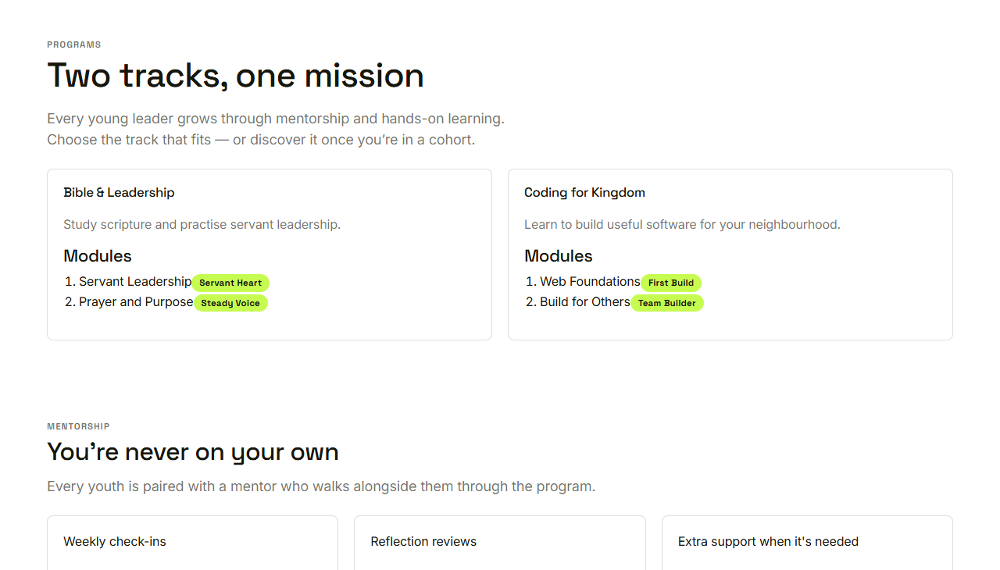
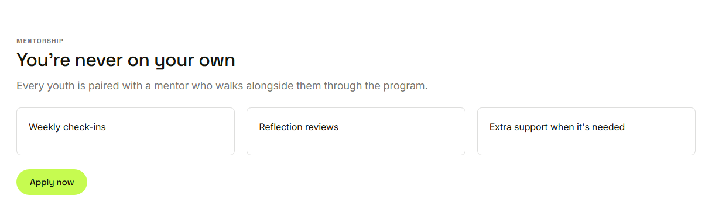

Waypoint · Video 015
Exploring the programs
What Waypoint teaches, and who walks with you
Two tracks, one mission

The programs page
Modules and outcome badges
Each module shows the badge it leads to
Only published content
Published tracks and modules only
Unfinished content stays out of view
Nothing published: programs are being prepared
You’re never on your own

Weekly check-ins, reflection reviews, extra support
Things to remember
Open to everyone
Each published track lists modules and badges
Unpublished content never appears
Mentorship is explained on the same page